2019 유라시아 일주 - 바이칼 호수 여행기
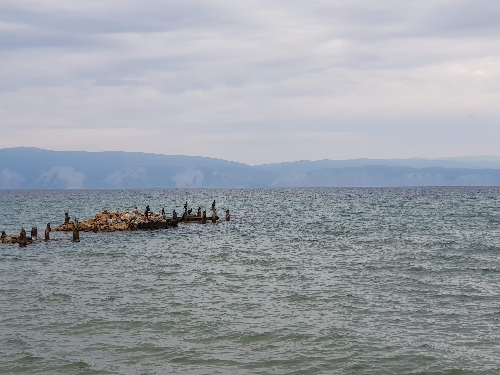
Figure 1: 바이칼 호수와 새들
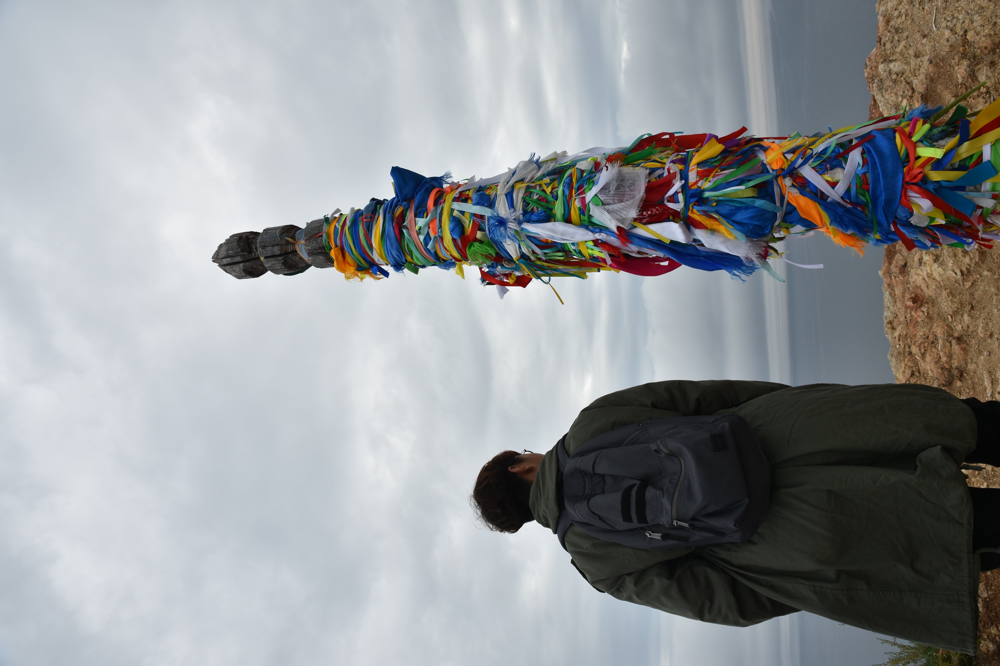
Figure 2: 바이칼 호수 곳곳에 있는 샤머니즘 기둥
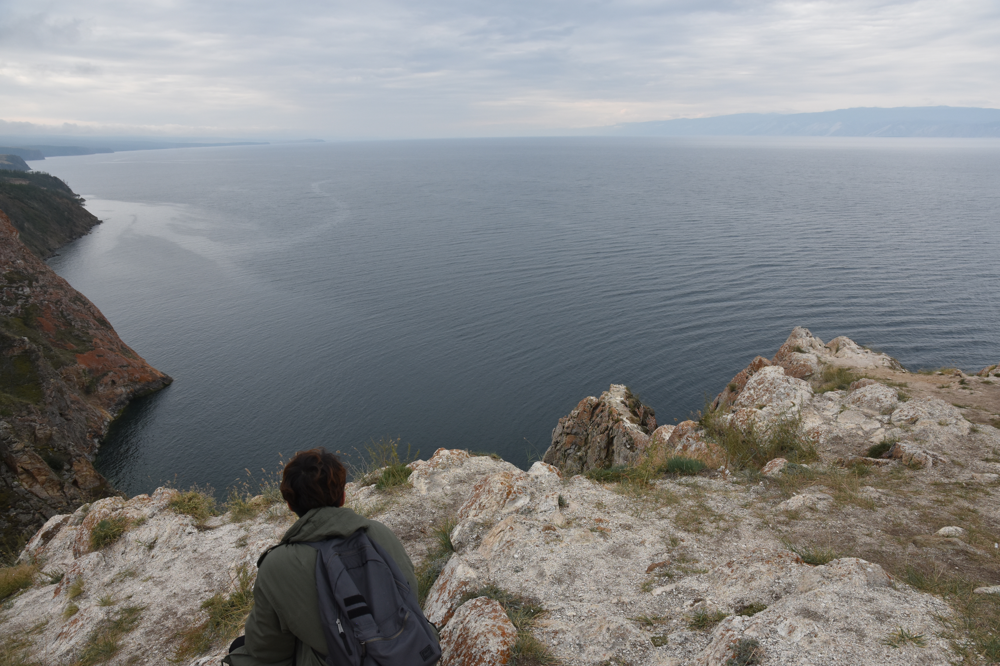
Figure 3: 바이칼 호수를 내려다보며
바이칼 호수로 가는 길
이르쿠츠크 버스 스테이션에서 바이칼 호수의 올혼섬까지는 대략 6시간이 걸렸다. 부산에서 동두천까지 차로 7시간정도 걸리니 대략 비슷한 느낌이다. 올혼섬은 바이칼 호수 가운데 있는 섬인데 바이칼 호수를 둘러볼 수 있는 가장 좋은 곳이다. 물론 올혼섬말고도 리스트비얀카같은 곳에서도 바이칼 호수를 둘러볼 수 있다. 하지만 바이칼 호수에 둘러쌓여 있는 올혼섬만큼 좋은 곳은 없을 것이다.
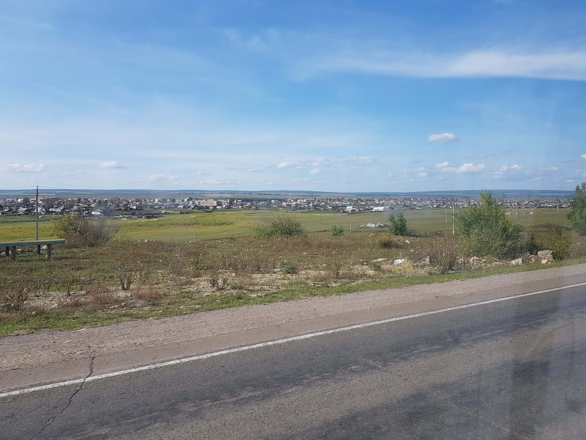
Figure 4: 올혼섬으로 가는 길에 펼쳐지는 풍경들
올혼섬으로 가는 길에 주유소와 휴게소가 있다. 현지인들이 먹는 음식 그대로 시켜먹으면 실패하는 일은 없다. 나는 빵과 코카롤라를 먹었다. 러시아 어딜가나 파는 튀김빵이 있는데 이름을 까먹었다.
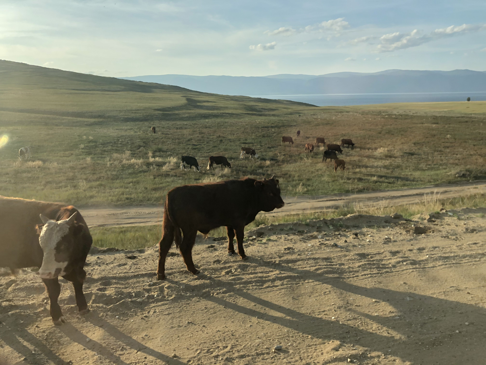
Figure 5: 올혼섬에 들어서자 보이는 소들
올혼섬을 가는 길에도 소가 많았고 올혼섬 안에도 소가 많았다. 자유롭게 풀을 뜯는 모습을 보고 있으면 나도 마음이 편해진다. 도로 상태는 좋지 않아서 가는 길에 엉덩이와 허리가 많이 아팠다. 땅덩어리는 이렇게 넓은데 인구가 우리나라의 3배밖에 안되니 전국의 도로를 말끔히 정비하는 건 불가능에 가깝지 않을까 생각했다.
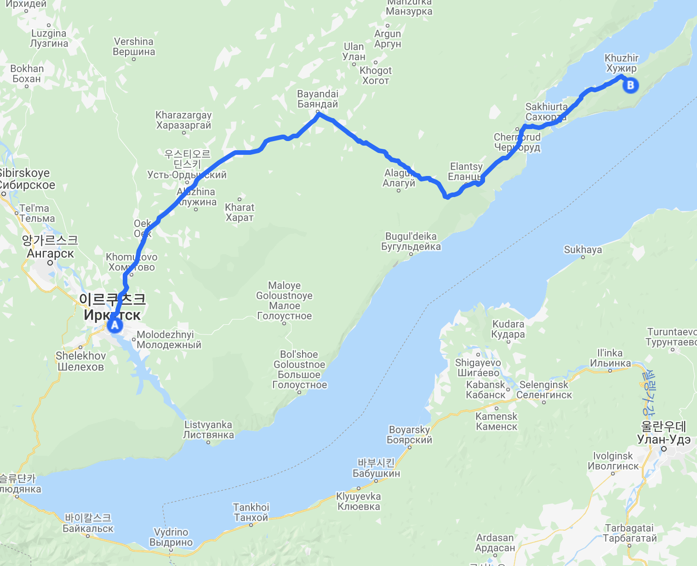
Figure 6: 올혼섬 후지르까지 6시간이 걸린다
올혼섬 스베트 라나
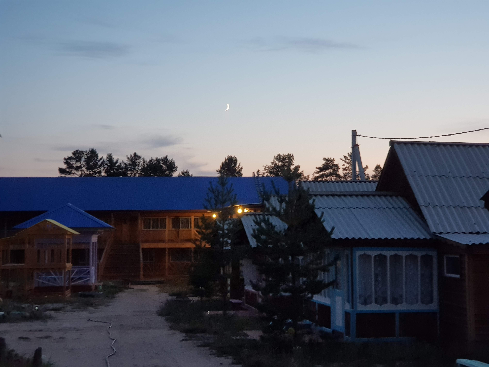
Figure 7: 스베트 라나 호스텔의 저녁 모습
올혼섬에서 우리는 스베트 라나 호스텔에서 지냈다. 올혼섬 호스텔 중에서 가장 괜찮은 곳이라고 인터넷에서 글을 봤기 떄문이다. 여행을 하기 전엔 인터넷이 끊기면 어떡하지라는 걱정을 했었는데, 막상 다녀보니 그런 걱정은 정말 번지수를 잘못 찾는 것이었다. 세계 어딜 가나 인터넷이 문제가 되는 경우는 거의 없다. 인터넷보다 찾기 어려운 게 화장실이다.
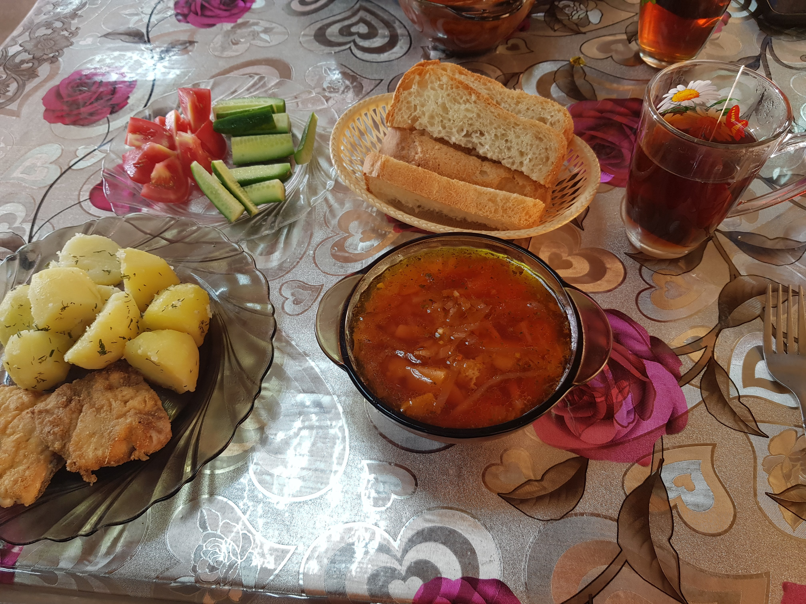
Figure 8: 스베트 라나 호스텔에서 나오는 아침식사
스베트 라나 호스텔은 합리적인 가격에 조식도 만족스럽게 나오고 숙박시설도 깔끔했다. 올혼섬에서 바이칼 호수를 간다면 여기를 안갈 이유가 있을까?
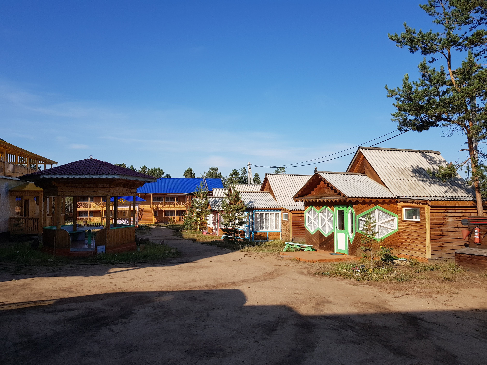
Figure 9: 떠나던 날 낮의 모습
저녁이 넘어가면 길고양이들이 호스텔 마당으로 들어오는데 가져온 음식을 주면서 쓰다듬는 재미가 있다. 물론 주인 아저씨는 고양이를 싫어하기 때문에 몰래 해야한다! 조금 충격적인 장면이지만 고양이를 보는 순간 낚아채 호스텔 밖으로 내던지신다.
바이칼 호수
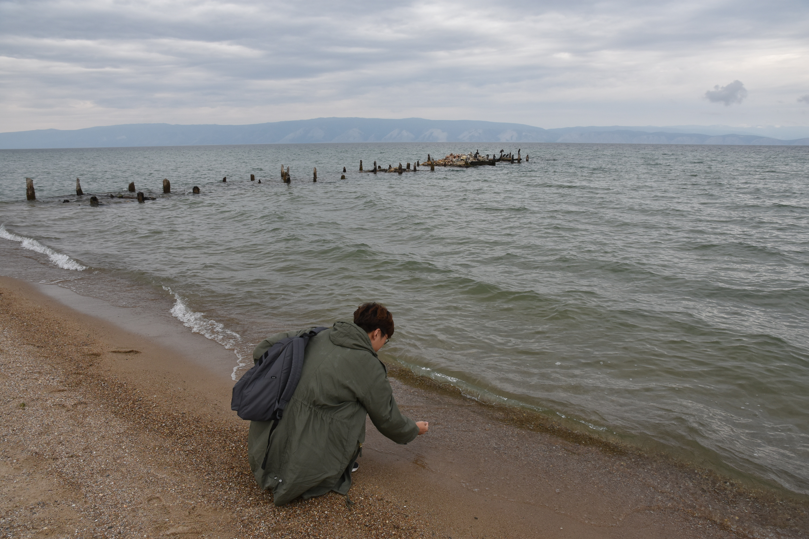
Figure 10: 바이칼 호수가 정말 민물일까… 찍어 먹어봤다
바이칼 호수는 호수라기보다 바다같은 느낌이다. 정말 상상이상으로 넓다. 바이칼 호수 너머로 산과 언덕들이 보이는데 신기루처럼 보인다. 수평선에 산이 있을 수는 없으니 바다같으면서도 바다가 아닌 착각이 들게 한다. 옛날에 여기서 살았던 사람들은 이 풍경을 바라보며 어떤 생각을 했을까?
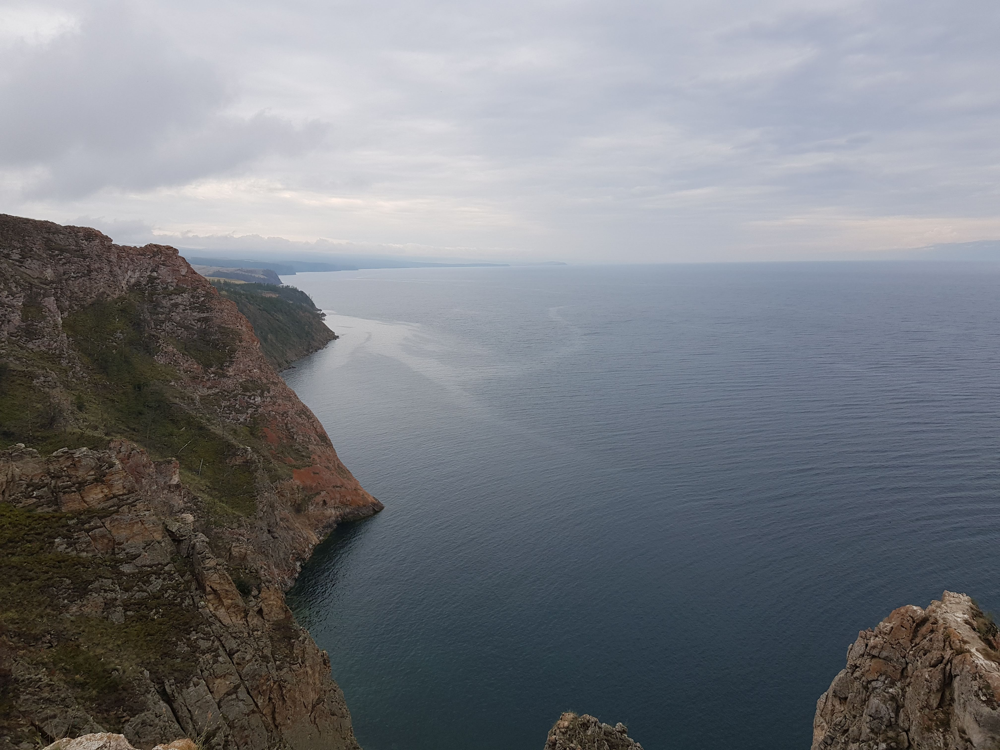
Figure 11: 바이칼 호수가 내려다보이는 절벽
올혼섬에서 바이칼 호수를 보고 있으면 바다에 둘러쌓여 있으면서도 그 너머에 있는 땅이 이 곳을 감싸고 있다는 감상이 든다. 다른 곳에서 쉽게 볼 수 없는 풍경이다. 다른 곳과는 다른 특별한 모습에 예전에 이곳에 있었던 사람들은 이곳이 자연이나 신과 연결된 곳이라고 믿었던 것 같다.
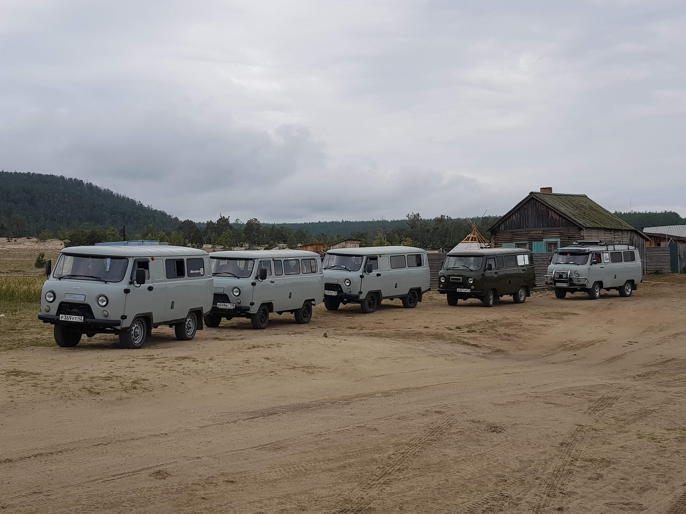
Figure 12: 올혼섬의 교통수단 UAZ
올혼섬에 가면 어디서나 볼 수 있는 UAZ는 원래 군용으로 개발된 자동차다. 보통 우아직이라고 부르는데 원래 군용으로 부상자를 수송하는 용도로 개발되서 내부를 보면 사람을 눕히거나 구급용품을 배치할 수 있는 공간의 흔적이 남아있다. 하지만 군용으로 만든만큼 튼튼하고 고장이 잘 안나는 데다가 수리하기도 쉬워서 비포장도로가 많은 올혼섬에서 큰 인기를 끌었다고 한다. 개발한 의도와는 다르지만 나름대로 성공작이다. 동그랗게 생긴 귀여운 모습은 UAZ의 상징이다.
바이칼 투어를 하며 탄 UAZ에는 버스기사님, 나와 승민이, 커플, 그리고 한 아저씨가 같이 탔다. 투어를 하는 내내 커플은 버스 기사님과 러시아어로 대화를 했다. 그래서 러시아사람들인 줄 알았는데 물어보니 폴란드에서 왔다고 했다. 나중에 찾아보니 러시아어와 폴란드어가 슬라브어 계통으로 서로 가까운 언어라 어느정도 대화가 가능하다고 한다. 한국어는 바로 대화가 될 정도로 가까운 언어가 없는데 좀 부러웠다.
아저씨는 자기가 이르쿠츠크에서 IT회사에 다닌다고 소개했다. 사진을 찍는 게 취미인데 바이칼 호수를 촬영하러 왔다고 그랬다. 확실히 촬영장비가 남달랐다. 나중에 우리에게 사진을 꼭 보내주겠노라고 이메일 주소를 남겨줬다. 바이칼 투어가 끝난 후 아저씨 이메일로 사진을 부탁한다고 메일을 보냈는데 아직도 답장이 없다. 휴가가 끝난 뒤 바쁜 일상에 까먹은 게 아닐까?
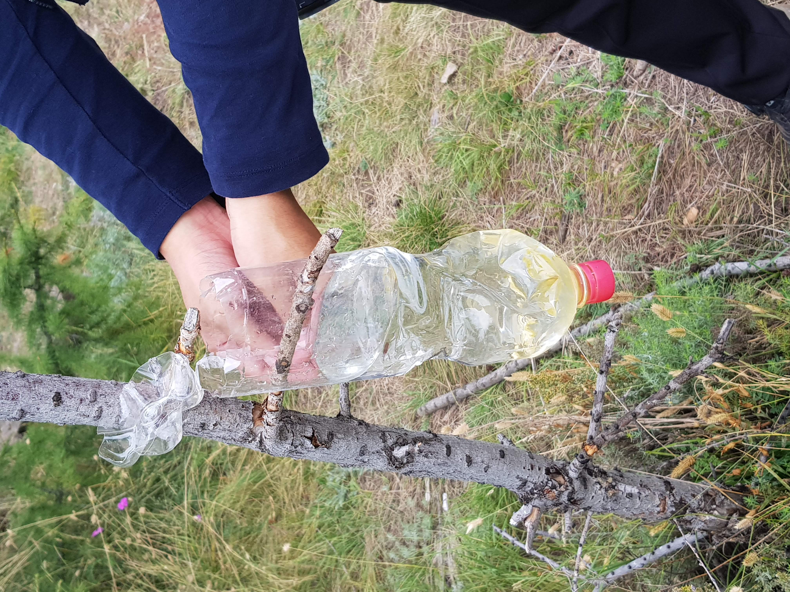
Figure 13: 바이칼 호수에서 간단히 점심 먹기전, 급조한 세면대에서 손을 씻는다.
바이칼 투어의 또다른 별미는 호수 옆에서 먹는 점심이다. 투어 가이드 겸 버스기사님이신 아저씨가 생선요리를 해주신다. 내 입맛에 조금 짜긴 했지만 특이한 맛에 정말 맛있게 먹었다. 탕에 비슷한 국물요리인데, 이 요리로 입맛을 돋우고 빵과 감자로 배를 채우면 든든하게 밥 한끼가 된다.
우리는 바이칼 투어가 끝나고 스베트 라나에서 하룻밤을 더 보낸 뒤 이르쿠츠크로 돌아갔다.